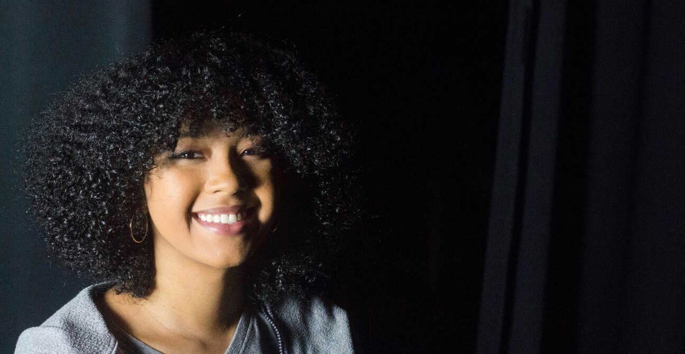

About Me
My name is Alondra Feliz and I'm currently a Visual Arts Major at the Miami International University of Art and Design. I first started off as an Animation major but when I began taking a a few ceramic courses my eyes were curious of the wheel. I continuosly practice on the wheel to create modern, yet unique, style bowls and mugs. I first found this as a hobby but i hope with improvement I can beecome independent and sell them as a product. During the wheeling process, it takes time to center the clay and develop the cylinder.
To maintain the form I leave the bowls to dry a lottle longer than usual, to have a harder texture than the leather. Then the clay becomes more easier to trim down and perfect. Although I don't believe to perfection, I believe there is a way to find our own perfection. After the trim is done and the piece has been fired. I used underglaze to create a splash brush effect in order to have my own design and not use the the glaze provided to me. I also add in the gloss glaze after to give it a sort of shine, but lead-free in order to be used to contain food or liquids. I am still continuosly creating more pieces and finding new ways to make my art more unique.
Hopefully in time, with inspiration, I can make new pieces and art that can be useful yet unique from others.